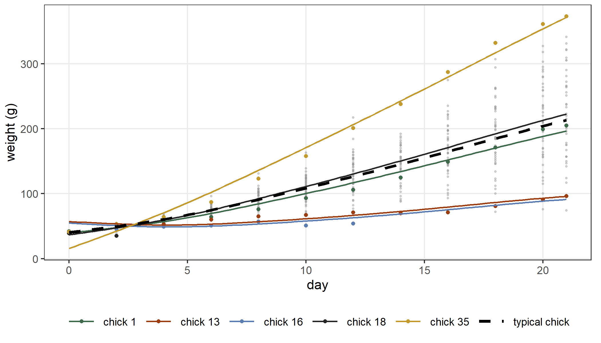
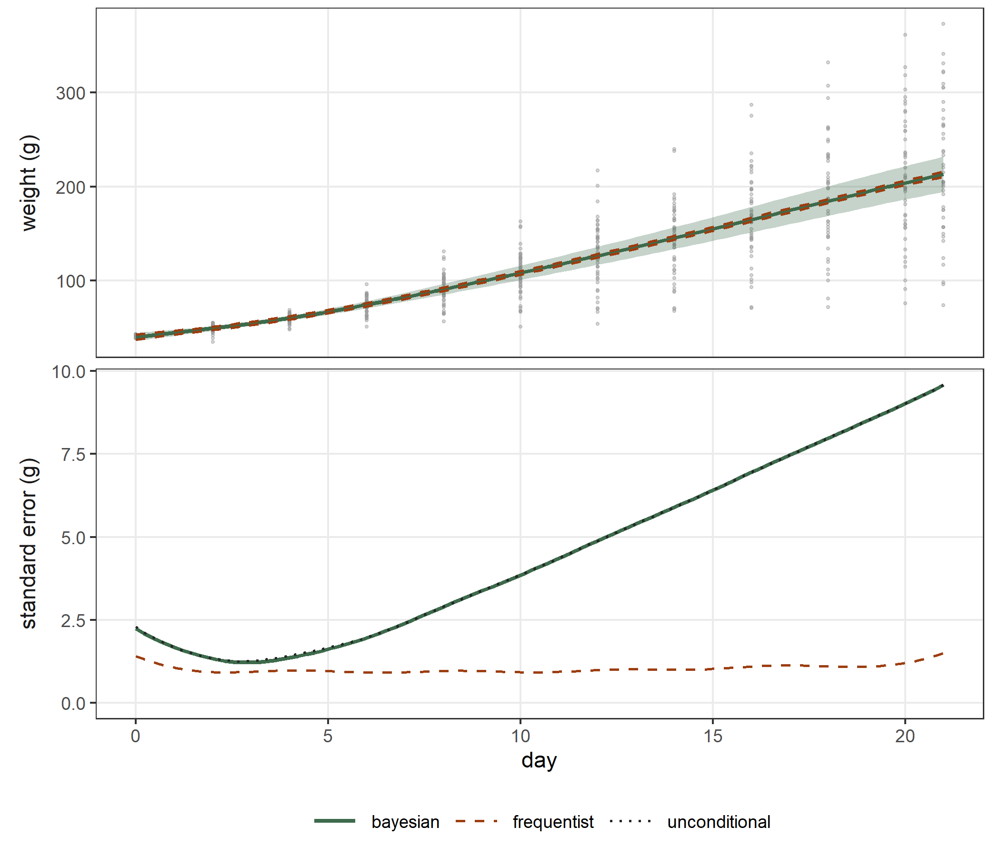
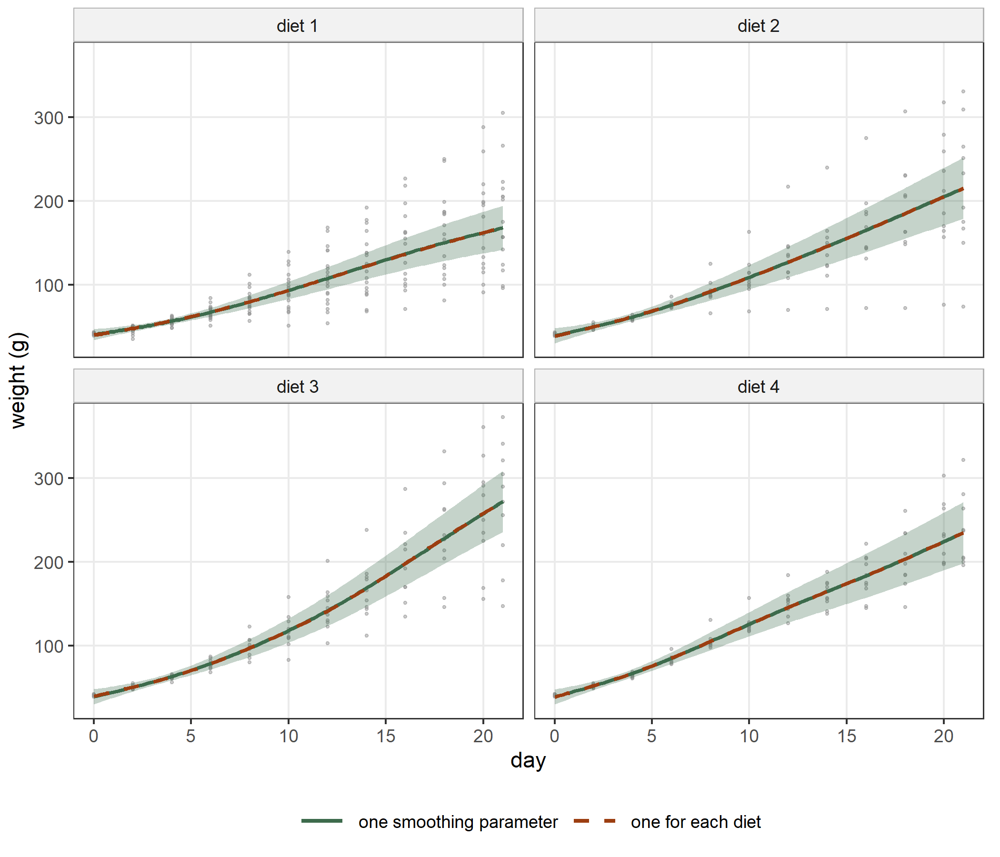
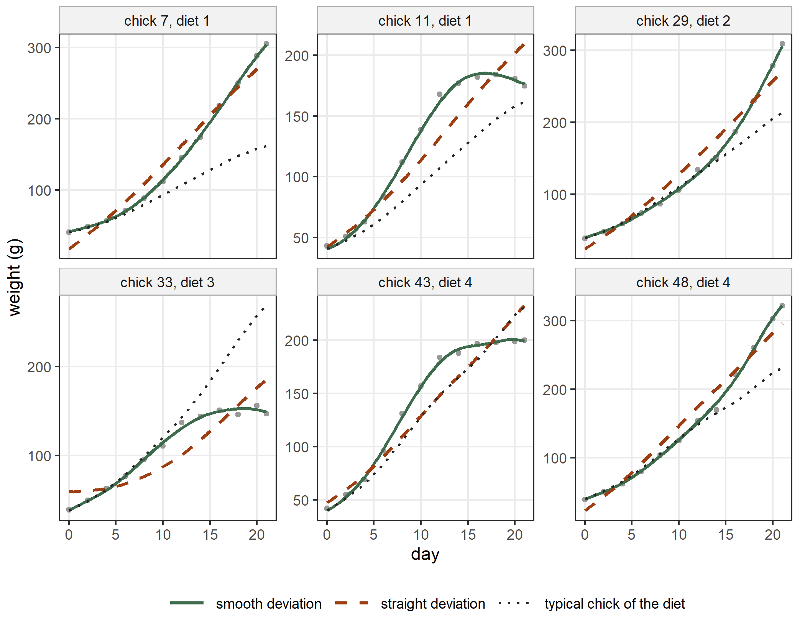
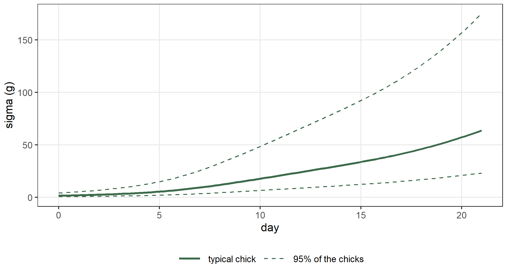
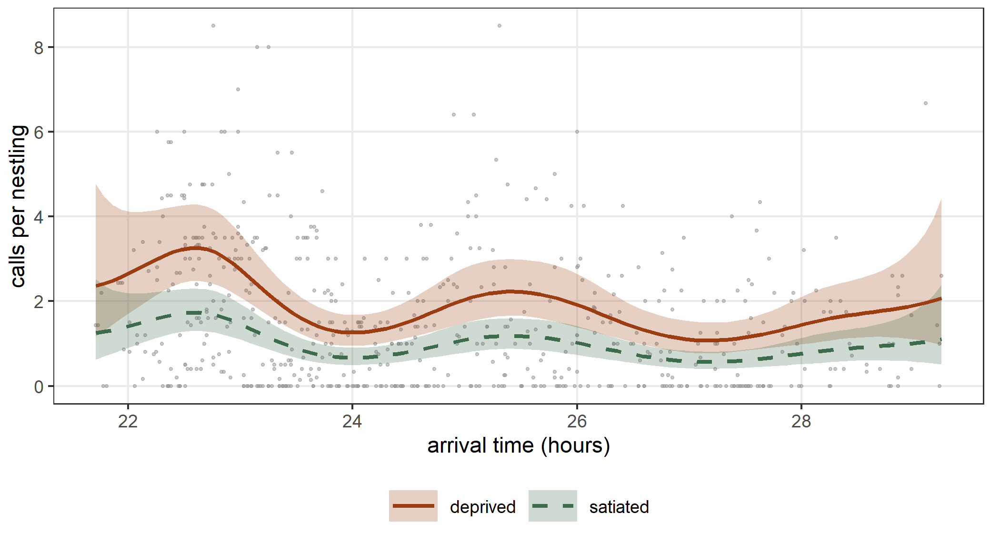
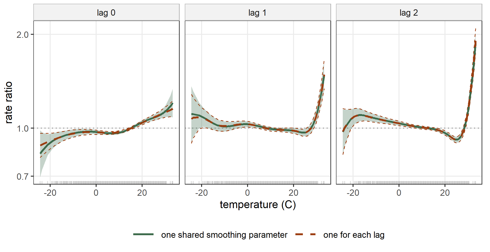

ChickWeight$Diet <- factor(ChickWeight$Diet, ordered = FALSE)
fit_ri <- statmod(weight ~ s(Time, bspline_smooth(k = 8)) + random(~ 1 | Chick),
distrib = gaussian1_distrib(), data = ChickWeight)
summary(fit_ri)
#> A statmod fit
#>
#> Call: statmod(formula = weight ~ s(Time, bspline_smooth(k = 8)) + random(~1 |
#> Chick), distrib = gaussian1_distrib(), data = ChickWeight)
#>
#> Distribution: gaussian1 Observations: 578
#>
#> === mu [identity link]
#>
#> Parametric terms
#> estimate se z p lower upper
#> (Intercept) 121.3 3.968 30.57 < 1e-16 113.5 129.1
#>
#> s(Time, bspline_smooth(k = 8)) [7 coefficients, edf 3.10]
#> estimate se z p lower upper
#> lambda [reml] 0.0416 0.041 0.006027 0.2871
#> lin 58.97 1.158 50.93 < 1e-16 56.7 61.24
#>
#> random(~1 | Chick) [50 coefficients, edf 44.64]
#> estimate se lower upper
#> sigma [reml] 26.78 2.955 21.58 33.25
#> predicted effects (50 levels of Chick)
#> Min. 1st Qu. Median Mean 3rd Qu. Max.
#> (Intercept) -52.22 -17.83 0.2718 0 17.56 64.38
#>
#> === sigma [log link]
#>
#> Parametric terms
#> estimate se z p lower upper
#> (Intercept) 3.318 0.03084 107.6 < 1e-16 3.257 3.378
#>
#> 95% intervals, bayesian variance
#> conditional log-likelihood -2713.454173 effective df 49.74
#> cAIC 5526.391 cBIC 5743.242
#> fitted in 2.47 s
#> inner max |grad|/se 7.1e-15 min eigen 0.043
#> outer max |grad|/se 3.5e-10 min eigen 0.98
#> 1 note: print(summary(fit), notes = TRUE)9 Generalized additive mixed models
A generalized additive mixed model has smooth functions and random effects in the same predictor (Lin and Zhang 1999; Ruppert, Wand, and Carroll 2003): \[
\eta_{ij} = x_{ij}^\top\beta + \sum_k f_k(t_{ij}) + z_{ij}^\top b_i ,
\] where \(i\) is the group and \(j\) the observation. In statmodels7 the two kinds of term are built in the same way. The coefficients of a smooth have the penalty \(\lambda\,\beta^\top S\beta\) of Chapter 6, and the random effects have the penalty \(b^\top\Sigma_b^{-1}b\) of Chapter 7. Both penalties are minus the logarithm of a gaussian density, so the REML criterion of the previous chapters integrates both kinds of coefficient and estimates \(\lambda\) and \(\Sigma_b\) together. Nothing new is needed to fit the model: a formula with s() and random() is enough.
Two other packages fit these models, and they meet the same idea from the two opposite sides. The package mgcv writes a random intercept as a smooth whose penalty is the identity matrix (bs = "re") (Wood 2017). The package glmmTMB writes a smooth as a random effect: the part of the smooth that the penalty shrinks becomes a vector of random effects with a common variance, and the part that the penalty leaves free becomes a fixed effect (Brooks et al. 2017). We compare with both throughout the chapter. As in Chapter 6 we call mgcv as mgcv::gam() without attaching it.
9.1 A smooth and a random intercept
The data frame ChickWeight of Section 6.4 gives the weight, in grams, of 50 chicks from birth to day 21 (Crowder and Hand 1990). There we fitted one smooth curve of time for each diet and ignored that the observations of one chick are correlated. We now give each chick a random intercept and start with one curve for all the chicks: \[
\mu_{ij} = \beta_0 + f(t_{ij}) + b_i, \qquad b_i \sim \mathrm{N}(0, \tau).
\]
The summary has a block for the smooth and a block for the random intercept. The smooth spends 3.10 effective degrees of freedom out of its 7 coefficients. The standard deviation of the chicks’ intercepts is \(\hat\tau = 26.78\) grams, about as large as the residual standard deviation \(\hat\sigma = 27.60\) grams.
In mgcv the random intercept is the smooth s(Chick, bs = "re"). Its penalty is \(\lambda_b\, b^\top b\), divided by the residual variance, so the standard deviation of the random effects is \(\sigma/\sqrt{\lambda_b}\):
g_ri <- mgcv::gam(weight ~ s(Time, bs = "bs", k = 8) + s(Chick, bs = "re"),
data = ChickWeight, method = "REML")
c(statmod = hyper(fit_ri)$estimate[2],
mgcv = sqrt(g_ri$sig2 / g_ri$sp[2]))
#> statmod mgcv.s(Chick)
#> 26.78313 26.78313
max(abs(fitted(fit_ri) - fitted(g_ri)))
#> [1] 1.543418e-08The two packages give the same standard deviation and the same fitted values.
A random slope
The chicks grow at different rates, so their weights spread out with time. A random slope on time describes this: \[ \mu_{ij} = \beta_0 + f(t_{ij}) + b_{0i} + b_{1i} t_{ij}, \qquad (b_{0i}, b_{1i})^\top \sim \mathrm{N}(0, \Sigma_b). \]
fit_rs <- statmod(weight ~ s(Time, bspline_smooth(k = 8)) + random(~ Time | Chick),
distrib = gaussian1_distrib(), data = ChickWeight)
summary(fit_rs)
#> A statmod fit
#>
#> Call: statmod(formula = weight ~ s(Time, bspline_smooth(k = 8)) + random(~Time |
#> Chick), distrib = gaussian1_distrib(), data = ChickWeight)
#>
#> Distribution: gaussian1 Observations: 578
#>
#> === mu [identity link]
#>
#> Parametric terms
#> estimate se z p lower upper
#> (Intercept) 120.2 4.136 29.06 < 1e-16 112.1 128.3
#>
#> s(Time, bspline_smooth(k = 8)) [7 coefficients, edf 4.41]
#> estimate se z p lower upper
#> lambda [reml] 0.03795 0.03287 0.00695 0.2072
#> lin 57.55 3.582 16.07 < 1e-16 50.53 64.57
#>
#> random(~Time | Chick) [100 coefficients, edf 69.74]
#> estimate se lower upper
#> sd[(Intercept)] [reml] 12.02 1.551 9.329 15.48
#> sd[Time] [reml] 3.693 0.3826 3.014 4.525
#> cor[(Intercept), Time] [reml] -0.924 0.03556 -0.97 -0.8141
#> predicted effects (50 levels of Chick)
#> Min. 1st Qu. Median Mean 3rd Qu. Max.
#> (Intercept) -24.64 -7.841 -0.8384 0 8.463 22.09
#> Time -7.152 -2.444 0.02372 0 2.525 8.71
#>
#> === sigma [log link]
#>
#> Parametric terms
#> estimate se z p lower upper
#> (Intercept) 2.433 0.03195 76.14 < 1e-16 2.37 2.495
#>
#> 95% intervals, bayesian variance
#> conditional log-likelihood -2188.728821 effective df 76.15
#> cAIC 4529.758 cBIC 4861.741
#> fitted in 4.04 s
#> inner max |grad|/se 1.1e-14 min eigen 0.0029
#> outer max |grad|/se 2.7e-07 min eigen 0.25
#> 1 note: print(summary(fit), notes = TRUE)The two models have the same fixed effects, so their restricted log-likelihoods can be compared. Under the smaller model the variance of the slopes is zero, on the boundary of its range, so the likelihood ratio has the distribution \(\tfrac12\chi^2_1 + \tfrac12\chi^2_2\) and not \(\chi^2_2\) (Self and Liang 1987):
l_ri <- as.numeric(logLik(fit_ri, type = "marginal"))
l_rs <- as.numeric(logLik(fit_rs, type = "marginal"))
lr_rs <- 2 * (l_rs - l_ri)
lr_rs
#> [1] 872.7899
0.5 * pchisq(lr_rs, df = 1, lower.tail = FALSE) +
0.5 * pchisq(lr_rs, df = 2, lower.tail = FALSE)
#> [1] 1.536804e-190The random slope is needed. The correlation between the intercepts and the slopes is strongly negative. The deviation of a chick from the typical curve is \(b_{0i} + b_{1i}t\), and its variance \(\Sigma_{11} + 2t\,\Sigma_{12} + t^2\Sigma_{22}\) is smallest at \(t = -\Sigma_{12}/\Sigma_{22}\). As in Section 7.2, param_value() turns the hyperparameters of the random slope into \(\Sigma_b\):
h_rs <- hyper(fit_rs)
S_rs <- param_value(log_cholesky(2), eta = h_rs$estimate[h_rs$name != "lambda"])
S_rs
#> v1 v2
#> v1 144.37584 -41.00005
#> v2 -41.00005 13.63835
t_min <- -S_rs[1, 2] / S_rs[2, 2]
t_min
#> [1] 3.006233The correlation is -0.924, and the chicks are closest to each other 3.0 days after birth and spread out afterwards.
glmmTMB() accepts a smooth in its formula and gives the same estimates:
tmb_rs <- glmmTMB::glmmTMB(weight ~ s(Time, bs = "bs", k = 8) + (Time | Chick),
data = ChickWeight, REML = TRUE)
glmmTMB::VarCorr(tmb_rs)
#>
#> Conditional model:
#> Groups Name Std.Dev. Corr
#> dummy dummy1 3.3873
#> Chick (Intercept) 12.0156
#> Time 3.6930 -0.924
#> Residual 11.3907
logLik(tmb_rs)
#> 'log Lik.' -2359.369 (df=7)
logLik(fit_rs, type = "marginal")
#> 'log Lik.' -2360.764 (df=6)The group dummy of glmmTMB is the smooth: its standard deviation measures how much the wiggly part of the curve is shrunk, and it plays the role of \(\lambda\). The two restricted log-likelihoods differ by a constant. REML integrates every coefficient without a penalty with a flat prior, and the integral depends on the scale of the columns of these coefficients: if a column is multiplied by \(a\), its coefficient is divided by \(a\) and the integral changes by \(\log\lvert a\rvert\). The free part of the smooth is a straight line in time, and the two packages scale its column differently:
x_sm <- model.matrix(fit_rs)[, "s(Time).lin"]
x_tmb <- glmmTMB::getME(tmb_rs, "X")[, "s(Time)1"]
a_lin <- coef(lm(x_sm ~ x_tmb))[["x_tmb"]]
log(abs(a_lin))
#> [1] 1.395387
as.numeric(logLik(tmb_rs)) - l_rs
#> [1] 1.395387The constant is the same for every model with this smooth, so a difference between two restricted log-likelihoods, like the likelihood ratio above, is the same in both packages.
Figure 9.1 shows the curve of a typical chick, with \(b_i = 0\), and the curves of five chicks.

The band of the typical curve
The curve of a typical chick is an estimate, and predict() with se = TRUE gives it a pointwise 95% band. The band depends on the variance matrix of Section 2.1. In a model with random effects the three matrices answer three different questions. The matrix \(V_f\) treats the effects \(b_i\) of the 50 chicks as fixed numbers, so it measures how much the curve would change if we weighed the same 50 chicks again. The matrix \(V_b\) treats the \(b_i\) as draws from their gaussian distribution, so it measures how well a sample of 50 chicks determines the curve of the population of chicks. The matrix \(V_u\) adds to \(V_b\) the uncertainty of \(\lambda\) and of \(\Sigma_b\). We compute the three bands at days 0, 10.5 and 21:
tg <- seq(from = 0, to = 21, length.out = 101)
nd_t <- data.frame(Time = tg, Chick = factor("1", levels = levels(ChickWeight$Chick)))
types <- c("bayesian", "frequentist", "unconditional")
bands <- lapply(types, function(ty) {
predict(fit_rs, what = "mu", newdata = nd_t, random = "zero", se = TRUE,
type = ty)
})
names(bands) <- types
sapply(bands, function(p) p$se[c(1, 51, 101)])
#> bayesian frequentist unconditional
#> [1,] 2.242387 1.4046583 2.292312
#> [2,] 4.103402 0.9260652 4.106455
#> [3,] 9.585735 1.4997067 9.587510The frequentist standard errors stay between 0.9 and 1.5 grams at every age. The Bayesian ones grow with age, from 2.2 grams at birth to 9.6 grams at day 21. The growth comes from the random slopes: the chicks spread out with age, so the average curve of 50 chicks is less certain at day 21 than at birth. The variance of the deviation \(b_{0i} + b_{1i}t\) of one chick is \((1, t)\,\Sigma_b\,(1, t)^\top\), and the mean of 50 such deviations has a standard deviation of \(\sqrt{(1, t)\,\Sigma_b\,(1, t)^\top / 50}\):
sd_mean <- function(t) sqrt(drop(c(1, t) %*% S_rs %*% c(1, t)) / 50)
rbind(bayesian = bands$bayesian$se[c(1, 51, 101)],
chicks = sapply(c(0, 10.5, 21), sd_mean))
#> [,1] [,2] [,3]
#> bayesian 2.242387 4.103402 9.585735
#> chicks 1.699269 3.967374 9.420069From the first week on, most of the Bayesian standard error is the variation among chicks. The frequentist band leaves this variation out, so it is the right band only for a statement about these 50 chicks. For a statement about chicks in general, which is what a curve of a typical chick is for, the Bayesian band is the right one. The unconditional band is wider than the Bayesian band by at most 5.1 per cent: the 50 chicks determine \(\lambda\) and \(\Sigma_b\) well enough that their uncertainty adds little. Figure 9.2 shows the three bands.

In mgcv the matrices \(V_b\) and \(V_f\) are the components Vp and Ve of a fit. On the model with a random intercept the typical curve, which leaves out the term s(Chick), has the same two bands in the two packages:
Xg <- predict(g_ri, newdata = nd_t, type = "lpmatrix")
Xg[, grepl("Chick", colnames(Xg))] <- 0
se_mgcv <- function(V) sqrt(rowSums((Xg %*% V) * Xg))
se_sm <- function(ty) {
predict(fit_ri, what = "mu", newdata = nd_t, random = "zero", se = TRUE,
type = ty)$se
}
c(bayesian = max(abs(se_sm("bayesian") / se_mgcv(g_ri$Vp) - 1)),
frequentist = max(abs(se_sm("frequentist") / se_mgcv(g_ri$Ve) - 1)))
#> bayesian frequentist
#> 2.906475e-10 1.480441e-099.2 A smooth for each group
The chicks received four diets. As in Section 6.4, the argument by = Diet of s() builds one curve of time for each diet, and the main effect Diet carries the levels of the curves. We keep the random intercept and slope of each chick: \[
\mu_{ij} = \beta_0 + \beta_{d(i)} + f_{d(i)}(t_{ij}) + b_{0i} + b_{1i} t_{ij},
\] where \(d(i)\) is the diet of chick \(i\). With by_hyper = "shared", the default, the four curves have one smoothing parameter; with by_hyper = "level" each curve has its own.
fit_sh <- statmod(weight ~ Diet + s(Time, bspline_smooth(k = 8), by = Diet) +
random(~ Time | Chick),
distrib = gaussian1_distrib(), data = ChickWeight)
fit_lv <- statmod(weight ~ Diet + s(Time, bspline_smooth(k = 8), by = Diet,
by_hyper = "level") +
random(~ Time | Chick),
distrib = gaussian1_distrib(), data = ChickWeight)
hyper(fit_sh)[, c("name", "estimate")]
#> name estimate
#> 1 lambda 0.02854361
#> 2 sigma_log_L1 2.43079371
#> 3 sigma_log_L2 0.12644525
#> 4 sigma_L2.1 -3.08219041
hyper(fit_lv)[, c("name", "estimate")]
#> name estimate
#> 1 lambda 0.05962711
#> 2 lambda 0.05213136
#> 3 lambda 0.01395812
#> 4 lambda 0.03295095
#> 5 sigma_log_L1 2.43057188
#> 6 sigma_log_L2 0.12632341
#> 7 sigma_L2.1 -3.08280777The smoothing parameter of diet 3 is about a quarter of those of diets 1 and 2, so its curve bends more, and that of diet 4 is in between. The model with one parameter is the model with four under three equality constraints, and the constrained values are inside the range of the parameters, so the likelihood ratio has three degrees of freedom:
l_sh <- as.numeric(logLik(fit_sh, type = "marginal"))
l_lv <- as.numeric(logLik(fit_lv, type = "marginal"))
lr_by <- 2 * (l_lv - l_sh)
lr_by
#> [1] 1.725442
pchisq(lr_by, df = 3, lower.tail = FALSE)
#> [1] 0.6312924The data do not need four smoothing parameters.
In mgcv a smooth with a factor by has one smoothing parameter for each level by default, and the argument id makes the levels share one. Its random effects are smooths with an identity penalty, so the intercept and the slope of a chick cannot be correlated there. With correlated = FALSE the two packages fit the same model:
fit_shu <- statmod(weight ~ Diet + s(Time, bspline_smooth(k = 8), by = Diet) +
random(~ Time | Chick, correlated = FALSE),
distrib = gaussian1_distrib(), data = ChickWeight)
g_shu <- mgcv::gam(weight ~ Diet + s(Time, bs = "bs", k = 8, by = Diet, id = 1) +
s(Chick, bs = "re") + s(Chick, Time, bs = "re"),
data = ChickWeight, method = "REML")
max(abs(fitted(fit_shu) - fitted(g_shu)))
#> [1] 9.545837e-07
edf_mu <- function(fit) sum(fit@edf$edf[fit@edf$parameter == "mu"])
c(statmod = edf_mu(fit_shu), mgcv = sum(g_shu$edf))
#> statmod mgcv
#> 97.80878 97.80878Figure 9.3 shows the curve of a typical chick of each diet with its 95% Bayesian band, and the curve of the model with one smoothing parameter for each diet. The two curves of a diet are close to each other and well inside the band. The bands of the four diets overlap during the first week, and the curves separate in the second and third weeks, when diet 3 gives the heaviest chicks and diet 1 the lightest.

A curve for each chick
In the models so far a chick differs from the typical chick of its diet by a straight line, \(b_{0i} + b_{1i}t\). Figure 9.1 shows that some chicks have curves of a different shape: some grow fast and then slow down, and others start slowly. A model with s(Time, by = Chick) alone gives each chick a smooth curve of its own. Each chick received one diet, so the curves of the chicks then contain the curves of the diets, and the model has nothing left to compare the diets. We keep the curves of the diets and add to each chick a smooth deviation from the curve of its diet: \[
\mu_{ij} = \beta_0 + \beta_{d(i)} + f_{d(i)}(t_{ij}) + b_{0i} + b_{1i} t_{ij}
+ g_i(t_{ij}).
\] The 50 deviations \(g_i\) have one smoothing parameter, so the data of all the chicks determine how much a chick’s curve may bend. This is a hierarchical additive model in the sense of Pedersen et al. (2019), with one curve for each diet in place of one curve for all the groups. The straight line of \(g_i\) is already in the random intercept and slope, so we drop it with null_space = "drop"; then \(g_i\) has no coefficient without a penalty. The deviations have 200 coefficients, most of them zero in each row of the design, and sparse = TRUE stores their block as a sparse matrix. The argument label gives the coefficients of the deviations the prefix dev, because the levels 1 to 4 of Chick would give them the same names as the curves of the four diets.
fit_gs <- statmod(weight ~ Diet + s(Time, bspline_smooth(k = 8), by = Diet) +
random(~ Time | Chick) +
s(Time, bspline_smooth(k = 6, null_space = "drop"), by = Chick,
sparse = TRUE, label = "dev"),
distrib = gaussian1_distrib(), data = ChickWeight)
summary(fit_gs)
#> A statmod fit
#>
#> Call: statmod(formula = weight ~ Diet + s(Time, bspline_smooth(k = 8),
#> by = Diet) + random(~Time | Chick) + s(Time, bspline_smooth(k = 6,
#> null_space = "drop"), by = Chick, sparse = TRUE, label = "dev"),
#> distrib = gaussian1_distrib(), data = ChickWeight)
#>
#> Distribution: gaussian1 Observations: 578
#>
#> === mu [identity link]
#>
#> Parametric terms
#> estimate se z p lower upper
#> (Intercept) 99.96 5.881 17 < 1e-16 88.43 111.5
#> Diet2 20.92 10.03 2.085 0.0370755 1.254 40.58
#> Diet3 40.63 10.03 4.05 5.119e-05 20.97 60.3
#> Diet4 33.78 10.03 3.367 0.0007601 14.12 53.45
#>
#> s(Time, bspline_smooth(k = 8), by = Diet) [28 coefficients, edf 22.97]
#> estimate se z p lower upper
#> lambda [reml] 0.009555 0.004297 0.003958 0.02307
#> 1.lin 41.54 5.289 7.854 4.016e-15 31.17 51.91
#> 2.lin 58.05 7.289 7.964 1.670e-15 43.76 72.33
#> 3.lin 76.89 7.289 10.55 < 1e-16 62.6 91.17
#> 4.lin 63.87 7.292 8.759 < 1e-16 49.58 78.16
#>
#> random(~Time | Chick) [100 coefficients, edf 87.35]
#> estimate se lower upper
#> sd[(Intercept)] [reml] 12.9 1.402 10.43 15.96
#> sd[Time] [reml] 3.408 0.3638 2.764 4.201
#> cor[(Intercept), Time] [reml] -0.892 0.03227 -0.9404 -0.8083
#> predicted effects (50 levels of Chick)
#> Min. 1st Qu. Median Mean 3rd Qu. Max.
#> (Intercept) -27.17 -8.921 -0.7386 0 9.497 26.13
#> Time -7.357 -1.856 -0.3333 0 2.176 6.956
#>
#> s(Time, bspline_smooth(k = 6, null_space = "drop"), by = Chick, sparse = TRUE, label = "dev") [200 coefficients, edf 132.08]
#> estimate se lower upper
#> lambda [reml] 0.008031 0.00114 0.00608 0.01061
#>
#> === sigma [log link]
#>
#> Parametric terms
#> estimate se z p lower upper
#> (Intercept) 1.211 0.04141 29.25 < 1e-16 1.13 1.293
#>
#> 95% intervals, bayesian variance
#> conditional log-likelihood -1397.140330 effective df 247.40
#> cAIC 3289.083 cBIC 4367.647
#> fitted in 7.03 s
#> inner max |grad|/se 6.1e-14 min eigen 0.00018
#> outer max |grad|/se 2.4e-06 min eigen 0.2
#> 1 note: print(summary(fit), notes = TRUE)The summary has one block for each of the four terms of the mean. The parametric terms Diet2, Diet3 and Diet4 shift the curves of the diets up or down. Each curve of a diet also has a level of its own, set by the constraint that removes the constant from its basis, so these three coefficients are not the differences between the diets on a given day; those differences are read from the curves of Figure 9.3. The block of the diet curves shows the one smoothing parameter of the four curves and the free straight line of each of them, 1.lin to 4.lin. As in Chapter 1, each multiplies the time standardized to mean zero and standard deviation one over all the observations, so it is the slope of the linear part of the diet’s curve per standard deviation of time, 6.76 days. The slopes are largest for diet 3 and smallest for diet 1, as the curves of Figure 9.3 show. The block spends 23.0 effective degrees of freedom of its 28 coefficients. The block of the random intercept and slope reports the standard deviation of the chicks’ intercepts, 12.9 grams, and of their slopes, 3.41 grams a day, and their correlation, -0.89. The block dev has only one row: the smoothing parameter of the 50 deviations, with its standard error and interval. Its 200 coefficients are not printed, because each of them is the coordinate of one chick’s deviation in a basis and has no meaning of its own. The equation of \(\sigma\) has only an intercept, on the log scale, so the residual standard deviation is \(\exp(1.211) = 3.36\) grams. The last lines give the effective degrees of freedom of the whole model, 247.4 for 578 observations, and the conditional AIC.
With straight deviations the residual standard deviation was larger:
c(straight = exp(coef(fit_sh)$sigma[[1]]), smooth = exp(coef(fit_gs)$sigma[[1]]))
#> straight smooth
#> 10.727906 3.358214The deviations spend 132.1 effective degrees of freedom of their 200 coefficients, about 2.6 for each chick. The residual standard deviation falls from 10.7 to 3.4 grams, so the residual variance falls by 90 per cent. Most of what the model with straight deviations left as noise is the shape of the chicks’ own curves. The two models have the same coefficients without a penalty, so their restricted log-likelihoods can be compared. Under the smaller model the variance \(1/\lambda\) of the deviations is zero, on the boundary of its range, and the likelihood ratio has the distribution \(\tfrac12\chi^2_0 + \tfrac12\chi^2_1\):
l_gs <- as.numeric(logLik(fit_gs, type = "marginal"))
lr_gs <- 2 * (l_gs - l_sh)
lr_gs
#> [1] 664.3997
0.5 * pchisq(lr_gs, df = 1, lower.tail = FALSE)
#> [1] 8.25039e-147The curve of a typical chick of a diet is now \(\beta_0 + \beta_d + f_d(t)\), without \(b_{0i} + b_{1i}t\) and without \(g_i\). predict() with random = "zero" sets the random intercept and slope to zero, but \(g_i\) is a smooth and not a random() term, so predict() keeps it. We build the curve, and any other part of the predictor, from the columns of the design and from the same rows and columns of vcov(). The function part_band() takes the prefixes of the columns and the rows of the data where the part is wanted:
part_band <- function(fit, prefix, rows = NULL, type = "bayesian") {
X <- as.matrix(model.matrix(fit))
if (!is.null(rows)) X <- X[rows, , drop = FALSE]
keep <- Reduce(`|`, lapply(prefix, function(p) startsWith(colnames(X), p)))
nm <- colnames(X)[keep]
Xk <- X[, nm, drop = FALSE]
V <- as.matrix(vcov(fit, type = type)[paste0("mu:", nm), paste0("mu:", nm)])
data.frame(fit = drop(Xk %*% coef(fit)$mu[nm]),
se = sqrt(rowSums((Xk %*% V) * Xk)))
}On the model of Section 9.1 the part s(Time) is the contribution of the smooth, which sums to zero over the data, and it has the value and the standard error that mgcv reports with type = "terms":
p_ri <- part_band(fit_ri, prefix = "s(Time).")
t_ri <- predict(g_ri, type = "terms", se.fit = TRUE)
c(fit = max(abs(p_ri$fit - t_ri$fit[, "s(Time)"])),
se = max(abs(p_ri$se - t_ri$se.fit[, "s(Time)"])))
#> fit se
#> 1.386113e-08 3.270786e-09The curve of diet 3 is the part with the prefixes (Intercept), Diet3 and s(Time).3.. We read it at the twelve days of chick 33, which received diet 3 and was weighed on every day:
r33 <- which(ChickWeight$Chick == "33")
d3 <- c("(Intercept)", "Diet3", "s(Time).3.")
rbind(day = ChickWeight$Time[r33],
straight = part_band(fit_sh, prefix = d3, rows = r33)$fit,
smooth = part_band(fit_gs, prefix = d3, rows = r33)$fit)
#> [,1] [,2] [,3] [,4] [,5] [,6] [,7] [,8]
#> day 0.00000 2.00000 4.0000 6.00000 8.00000 10.0000 12.0000 14.0000
#> straight 39.10764 50.52973 63.3930 78.94921 97.30058 118.2342 142.0118 168.9874
#> smooth 38.28104 49.13831 61.8323 79.02119 99.35408 120.5549 143.2788 169.3063
#> [,9] [,10] [,11] [,12]
#> day 16.0000 18.0000 20.0000 21.0000
#> straight 198.2746 228.2838 257.9285 272.3994
#> smooth 198.5429 229.5702 257.7618 268.5719
rbind(straight = part_band(fit_sh, prefix = d3, rows = r33)$se,
smooth = part_band(fit_gs, prefix = d3, rows = r33)$se)
#> [,1] [,2] [,3] [,4] [,5] [,6] [,7] [,8]
#> straight 4.625733 2.671585 2.477158 3.637492 5.450499 7.356266 9.375528 11.39236
#> smooth 6.795533 3.616914 2.408936 4.160293 6.357020 8.339237 10.229640 12.02935
#> [,9] [,10] [,11] [,12]
#> straight 13.44755 15.48707 17.55939 18.66281
#> smooth 13.87412 15.93268 18.34610 19.70093The curve of diet 3 is the same in the two models to within 4 grams. Its band is a little wider when the deviations are smooth, although the residual standard deviation is three times smaller. As in Section 9.1.2, most of the standard error of a typical curve is the variation among chicks, and with smooth deviations the chicks vary in the shape of their curves as well as in their intercept and slope.
Figure 9.4 shows the six chicks whose curves change most between the two models. With a straight deviation the curve of a chick has the shape of the curve of its diet. With a smooth deviation it follows the chick’s own weights: chicks 33 and 11 stop growing in the last week, and chicks 29 and 7 grow faster than the curve of their diet in the third week. The straight deviation cannot describe these shapes, and to come close to the late weights of chick 33 it puts the weight at birth about 20 grams too high.

9.3 Smooths and random effects in sigma
The spread of the weights around a chick’s curve also grows with age, and some chicks are more variable than others. We give the equation of \(\sigma\) a smooth of time and a random intercept of its own: \[ \log\sigma_{ij} = \gamma_0 + g(t_{ij}) + c_i, \qquad c_i \sim \mathrm{N}(0, \kappa), \] independent of the random intercept \(b_i\) of the mean.
fit_sg0 <- statmod(weight ~ Diet + s(Time, bspline_smooth(k = 8)) +
random(~ 1 | Chick) |
sigma ~ s(Time, bspline_smooth(k = 8)),
distrib = gaussian1_distrib(), data = ChickWeight)
fit_sg <- statmod(weight ~ Diet + s(Time, bspline_smooth(k = 8)) +
random(~ 1 | Chick) |
sigma ~ s(Time, bspline_smooth(k = 8)) + random(~ 1 | Chick),
distrib = gaussian1_distrib(), data = ChickWeight)
summary(fit_sg)
#> A statmod fit
#>
#> Call: statmod(formula = weight ~ Diet + s(Time, bspline_smooth(k = 8)) +
#> random(~1 | Chick) | sigma ~ s(Time, bspline_smooth(k = 8)) +
#> random(~1 | Chick), distrib = gaussian1_distrib(), data = ChickWeight)
#>
#> Distribution: gaussian1 Observations: 578
#>
#> === mu [identity link]
#>
#> Parametric terms
#> estimate se z p lower upper
#> (Intercept) 123.9 1.036 119.6 < 1e-16 121.9 125.9
#> Diet2 -0.02104 0.4825 -0.04361 0.9652160 -0.9666 0.9246
#> Diet3 0.9599 0.4912 1.954 0.0507071 -0.002954 1.923
#> Diet4 1.863 0.4828 3.859 0.0001137 0.917 2.809
#>
#> s(Time, bspline_smooth(k = 8)) [7 coefficients, edf 4.76]
#> estimate se z p lower upper
#> lambda [reml] 0.03009 0.02136 0.007487 0.1209
#> lin 61.53 1.173 52.45 < 1e-16 59.23 63.83
#>
#> random(~1 | Chick) [50 coefficients, edf 13.48]
#> estimate se lower upper
#> sigma [reml] 0.6798 0.1842 0.3997 1.156
#> predicted effects (50 levels of Chick)
#> Min. 1st Qu. Median Mean 3rd Qu. Max.
#> (Intercept) -1.016 -0.2156 0.08392 0 0.2394 0.9473
#>
#> === sigma [log link]
#>
#> Parametric terms
#> estimate se z p lower upper
#> (Intercept) 2.656 0.07815 33.98 < 1e-16 2.502 2.809
#>
#> s(Time, bspline_smooth(k = 8)) [7 coefficients, edf 3.87]
#> estimate se z p lower upper
#> lambda [reml] 20.8 28.89 1.366 316.6
#> lin 1.189 0.03887 30.59 < 1e-16 1.113 1.265
#>
#> random(~1 | Chick) [50 coefficients, edf 41.59]
#> estimate se lower upper
#> sigma [reml] 0.5046 0.06222 0.3963 0.6426
#> predicted effects (50 levels of Chick)
#> Min. 1st Qu. Median Mean 3rd Qu. Max.
#> (Intercept) -0.9517 -0.4257 -0.06862 -0.05339 0.2886 0.8737
#>
#> 95% intervals, bayesian variance
#> conditional log-likelihood -2303.691359 effective df 68.69
#> cAIC 4744.767 cBIC 5044.234
#> fitted in 6.22 s
#> inner max |grad|/se 7.6e-14 min eigen 0.0013
#> outer max |grad|/se 3.8e-06 min eigen 0.7
#> 1 note: print(summary(fit), notes = TRUE)The random intercepts of \(\log\sigma\) have a standard deviation of \(\hat\kappa = 0.50\): the residual standard deviation of one chick can be \(\exp(1.96\,\hat\kappa) = 2.7\) times larger or smaller than that of a typical chick. The two models have the same fixed effects in the mean, and under the smaller one \(\kappa^2\) is zero, on the boundary of its range, so the likelihood ratio has the distribution \(\tfrac12\chi^2_0 + \tfrac12\chi^2_1\) (Self and Liang 1987):
lr_sg <- 2 * (as.numeric(logLik(fit_sg, type = "marginal")) -
as.numeric(logLik(fit_sg0, type = "marginal")))
lr_sg
#> [1] 143.6151
0.5 * pchisq(lr_sg, df = 1, lower.tail = FALSE)
#> [1] 2.156321e-33
c(without = hyper(fit_sg0)$estimate[2], with = hyper(fit_sg)$estimate[2])
#> without with
#> 0.5350684 0.6798146The last line gives the standard deviation of the chicks’ intercepts in the mean, without and with the random effects in \(\sigma\): 0.54 and 0.68 grams. In the model of Section 9.1, with a constant \(\sigma\), it was 26.8 grams. A chick that grows faster than the others has its weights close to the typical curve at the start and far from it at the end. With a constant \(\sigma\) the model describes this with a large random intercept, which shifts the whole curve of the chick. With a \(\sigma\) that grows with time it describes it with a residual spread that grows, and the random intercept is left with the small differences at birth.
In glmmTMB() the equation of \(\sigma\) is the argument dispformula, which accepts a smooth and a random effect:
tmb_sg <- glmmTMB::glmmTMB(weight ~ Diet + s(Time, bs = "bs", k = 8) + (1 | Chick),
dispformula = ~ s(Time, bs = "bs", k = 8) + (1 | Chick),
data = ChickWeight, REML = TRUE)
glmmTMB::VarCorr(tmb_sg)
#>
#> Conditional model:
#> Groups Name Std.Dev.
#> dummy dummy1 3.79944
#> Chick (Intercept) 0.66523
#> Residual NA
#>
#> Dispersion model:
#> Groups Name Std.Dev.
#> dummy dummy1 0.10669
#> Chick (Intercept) 0.50383
#> Residual NA
max(abs(fitted(fit_sg) - fitted(tmb_sg)))
#> [1] 0.5519508The standard deviations differ by less than 3 per cent, and the fitted means differ by up to 0.55 grams. The difference comes from the smooth of \(\sigma\). A smooth with a penalty on the second derivative splits into a straight line, which the penalty leaves free, and a wiggly part, which the penalty shrinks. The split is not unique, because a straight line can be added to the wiggly part, and statmodels7 and mgcv (whose smooths glmmTMB uses) make different choices. REML integrates the straight line of the mean, and then the choice changes the criterion only by the constant of Section 9.1. The straight line of \(\sigma\) is not integrated but estimated (Section 2.8), and then the prior of the wiggly part, and so the estimates, depend on the choice. The same happens to the smooth of the mean under maximum likelihood, which estimates its straight line:
fit_ml <- statmod(weight ~ s(Time, bspline_smooth(k = 8)),
distrib = gaussian1_distrib(), data = ChickWeight,
outer_criterion = ml(marginal = "all"))
g_ml <- mgcv::gam(weight ~ s(Time, bs = "bs", k = 8), data = ChickWeight,
method = "ML")
c(statmod = exp(coef(fit_ml)$sigma[[1]]), mgcv = sqrt(g_ml$sig2))
#> statmod mgcv
#> 38.39060 38.45863
c(statmod = as.numeric(logLik(fit_ml, type = "marginal")), mgcv = -g_ml$gcv.ubre)
#> statmod mgcv.ML
#> -2930.227 -2930.709The two maxima differ: they are maxima of two slightly different models.
Figure 9.5 shows the residual standard deviation of a typical chick against time, with the interval that holds the standard deviation of 95% of the chicks (interval = "group", Section 8.5).

9.4 A model for counts
We return to the barn owls of Section 8.3: the number of calls of the nestlings in 27 nests before a parent arrived (Roulin and Bersier 2007). The parents arrived between about 21:40 and 5:15, and Zuur et al. (2009) found that the number of calls changes with the time of arrival. We add a smooth of the arrival time to the negative binomial model of Section 8.3: \[ \log\mu_{ij} = \log n_{ij} + x_{ij}^\top\beta + f(t_{ij}) + b_i, \qquad b_i \sim \mathrm{N}(0, \tau), \] where \(n_{ij}\) is the number of nestlings and \(t_{ij}\) the arrival time, in hours after midnight of the previous day (25 is 1:00 in the morning).
data(Owls, package = "glmmTMB")
fit_ow <- statmod(SiblingNegotiation ~ FoodTreatment * SexParent +
offset(logBroodSize) + s(ArrivalTime, bspline_smooth(k = 10)) +
random(~ 1 | Nest),
distrib = negbin2_distrib(), data = Owls)
summary(fit_ow)
#> A statmod fit
#>
#> Call: statmod(formula = SiblingNegotiation ~ FoodTreatment * SexParent +
#> offset(logBroodSize) + s(ArrivalTime, bspline_smooth(k = 10)) +
#> random(~1 | Nest), distrib = negbin2_distrib(), data = Owls)
#>
#> Distribution: negbin2 Observations: 599
#>
#> === mu [log link]
#>
#> Parametric terms
#> estimate se z p lower upper
#> (Intercept) 0.6468 0.129 5.015 5.315e-07 0.394 0.8996
#> FoodTreatmentSatiated -0.8172 0.1501 -5.446 5.153e-08 -1.111 -0.5231
#> SexParentMale -0.02552 0.1355 -0.1884 0.8506 -0.2911 0.2401
#> FoodTreatmentSatiated:SexParentMale 0.1856 0.1922 0.9656 0.3343 -0.1912 0.5624
#>
#> s(ArrivalTime, bspline_smooth(k = 10)) [9 coefficients, edf 6.31]
#> estimate se z p lower upper
#> lambda [reml] 0.8544 0.6569 0.1893 3.856
#> lin -0.2161 0.04706 -4.592 4.4e-06 -0.3083 -0.1238
#>
#> random(~1 | Nest) [27 coefficients, edf 17.12]
#> estimate se lower upper
#> sigma [reml] 0.3728 0.08799 0.2347 0.5921
#> predicted effects (27 levels of Nest)
#> Min. 1st Qu. Median Mean 3rd Qu. Max.
#> (Intercept) -0.662 -0.1647 0.01044 0 0.1882 0.5705
#>
#> === theta [log link]
#>
#> Parametric terms
#> estimate se z p lower upper
#> (Intercept) -0.04156 0.08263 -0.503 0.615 -0.2035 0.1204
#>
#> 95% intervals, bayesian variance
#> conditional log-likelihood -1687.874445 effective df 28.43
#> cAIC 3432.611 cBIC 3557.571
#> fitted in 520 ms
#> inner max |grad|/se 1.4e-15 min eigen 0.058
#> outer max |grad|/se 3.2e-08 min eigen 0.88
#> 1 note: print(summary(fit), notes = TRUE)The family nb() of mgcv estimates \(\theta\) together with the smoothing parameters, and glmmTMB() accepts the smooth with the family nbinom2:
g_ow <- mgcv::gam(SiblingNegotiation ~ FoodTreatment * SexParent +
offset(logBroodSize) + s(ArrivalTime, bs = "bs", k = 10) +
s(Nest, bs = "re"),
family = mgcv::nb(), data = Owls, method = "REML")
tmb_ow <- glmmTMB::glmmTMB(SiblingNegotiation ~ FoodTreatment * SexParent +
offset(logBroodSize) +
s(ArrivalTime, bs = "bs", k = 10) + (1 | Nest),
family = glmmTMB::nbinom2, data = Owls, REML = TRUE)
c(statmod = exp(coef(fit_ow)$theta[[1]]),
mgcv = g_ow$family$getTheta(TRUE), glmmTMB = glmmTMB::sigma(tmb_ow))
#> statmod mgcv glmmTMB
#> 0.9592876 0.9592876 0.9592854
max(abs(predict(fit_ow, what = "link:mu") - predict(g_ow, type = "link")))
#> [1] 6.078251e-09Figure 9.6 shows the calls per nestling of a typical nest against the arrival time. The nestlings call most when a parent arrives at about 22:40, and least when it arrives near midnight and near 3:00. The model has no interaction between the food treatment and the time, so on the log scale the two curves differ by a constant, and the food-deprived nestlings call more at every hour. The bands are widest at the two ends of the night, where few parents arrived.

Random effects on the dispersion
As in Section 8.3 we let \(\theta\) depend on the food treatment and on the nest:
fit_ow2 <- statmod(SiblingNegotiation ~ FoodTreatment * SexParent +
offset(logBroodSize) + s(ArrivalTime, bspline_smooth(k = 10)) +
random(~ 1 | Nest) |
theta ~ FoodTreatment + random(~ 1 | Nest),
distrib = negbin2_distrib(), data = Owls)
hyper(fit_ow2)[, c("parameter", "name", "estimate")]
#> parameter name estimate
#> 1 mu lambda 1.808185
#> 2 mu sigma 0.204138
#> 3 theta sigma 0.861120
tmb_ow2 <- glmmTMB::glmmTMB(SiblingNegotiation ~ FoodTreatment * SexParent +
offset(logBroodSize) +
s(ArrivalTime, bs = "bs", k = 10) + (1 | Nest),
dispformula = ~ FoodTreatment + (1 | Nest),
family = glmmTMB::nbinom2, data = Owls, REML = TRUE)
glmmTMB::VarCorr(tmb_ow2)
#>
#> Conditional model:
#> Groups Name Std.Dev.
#> dummy dummy1 0.39502
#> Nest (Intercept) 0.20414
#>
#> Dispersion model:
#> Groups Name Std.Dev.
#> Nest (Intercept) 0.86112The two models have the same fixed effects in the mean and the same smooth, so the constant of Section 9.1 cancels in the difference of their restricted log-likelihoods, and the two packages give the same likelihood ratio:
lr_ow <- 2 * (as.numeric(logLik(fit_ow2, type = "marginal")) -
as.numeric(logLik(fit_ow, type = "marginal")))
lr_ow_tmb <- 2 * (as.numeric(logLik(tmb_ow2)) - as.numeric(logLik(tmb_ow)))
c(statmod = lr_ow, glmmTMB = lr_ow_tmb)
#> statmod glmmTMB
#> 113.9219 113.92199.5 Shared smoothing parameters
The argument by_hyper decides whether the curves of one factor share a smoothing parameter. The argument id of s(), te(), random() and the penalized terms is more general: the hyperparameters of all the terms with the same id are estimated at one value, wherever the terms are in the formula.
Lagged covariates
A typical use is a covariate that enters the model at several lags. In the Chicago data of Section 6.7 the deaths of a day may depend on the temperature of that day and of the two days before. The three curves describe the same kind of effect, and it is natural to smooth them by the same amount: \[ \log\mu_t = x_t^\top\beta + h(t) + f_0(T_t) + f_1(T_{t-1}) + f_2(T_{t-2}), \] where \(h\) is a smooth of the date, \(x_t\) is the day of the week and \(T_t\) the mean temperature of day \(t\).
data(chicagoNMMAPS, package = "dlnm")
chicagoNMMAPS <- chicagoNMMAPS[chicagoNMMAPS$year >= 1995 &
chicagoNMMAPS$year <= 2000, ]
chicagoNMMAPS$temp1 <- c(NA, head(chicagoNMMAPS$temp, -1))
chicagoNMMAPS$temp2 <- c(NA, NA, head(chicagoNMMAPS$temp, -2))
chicagoNMMAPS <- chicagoNMMAPS[-(1:2), ]
fit_id <- statmod(death ~ dow + s(time, bspline_smooth(k = 24)) +
s(temp, bspline_smooth(k = 8), id = "T") +
s(temp1, bspline_smooth(k = 8), id = "T") +
s(temp2, bspline_smooth(k = 8), id = "T"),
distrib = poisson_distrib(), data = chicagoNMMAPS)
fit_free <- statmod(death ~ dow + s(time, bspline_smooth(k = 24)) +
s(temp, bspline_smooth(k = 8)) +
s(temp1, bspline_smooth(k = 8)) +
s(temp2, bspline_smooth(k = 8)),
distrib = poisson_distrib(), data = chicagoNMMAPS)
hyper(fit_id)[, c("term", "estimate")]
#> term estimate
#> 1 s(time, bspline_smooth(k = 24)) 1.103748
#> 2 s(temp, bspline_smooth(k = 8), id = "T") 12.202182
#> 3 s(temp1, bspline_smooth(k = 8), id = "T") 12.202182
#> 4 s(temp2, bspline_smooth(k = 8), id = "T") 12.202182
hyper(fit_free)[, c("term", "estimate")]
#> term estimate
#> 1 s(time, bspline_smooth(k = 24)) 1.104042
#> 2 s(temp, bspline_smooth(k = 8)) 1777.561112
#> 3 s(temp1, bspline_smooth(k = 8)) 16.539335
#> 4 s(temp2, bspline_smooth(k = 8)) 5.254421The id of mgcv does the same:
g_id <- mgcv::gam(death ~ dow + s(time, bs = "bs", k = 24) +
s(temp, bs = "bs", k = 8, id = 1) +
s(temp1, bs = "bs", k = 8, id = 1) +
s(temp2, bs = "bs", k = 8, id = 1),
family = poisson, data = chicagoNMMAPS, method = "REML")
max(abs(predict(fit_id, what = "link:mu") - predict(g_id, type = "link")))
#> [1] 6.677595e-06The shared parameter is a constraint on the free ones, inside their range, so we compare the two models with a likelihood ratio on two degrees of freedom:
lr_id <- 2 * (as.numeric(logLik(fit_free, type = "marginal")) -
as.numeric(logLik(fit_id, type = "marginal")))
lr_id
#> [1] 20.34617
pchisq(lr_id, df = 2, lower.tail = FALSE)
#> [1] 3.818444e-05
fit_free@edf[3:5, c("term", "edf")]
#> term edf
#> 3 s(temp, bspline_smooth(k = 8)) 4.187574
#> 4 s(temp1, bspline_smooth(k = 8)) 6.653427
#> 5 s(temp2, bspline_smooth(k = 8)) 6.881659Here the data reject the shared parameter. With three free parameters the curve of the same day’s temperature is smoothed much more than the other two: it spends 4.2 effective degrees of freedom of its 7 coefficients, against 6.7 and 6.9 for the two previous days.
The function part_band() of Section 9.2.1 gives the contribution \(f_k(T)\) of each curve with its band. The contribution sums to zero over the data, and its band leaves out the uncertainty of the intercept. Figure 9.7 shows the three curves of the two models as ratios of the death rate, \(\exp\{f_k(T)\}\), with their 95% bands.

The three temperatures are strongly correlated, so each curve is the effect of the temperature of one day with the temperatures of the other two days held fixed. On 98 days of 100 the two models give curves that differ by less than half a per cent in the rate. The shared parameter changes the curves at their ends, where the data are few, and most of all the curve of the same day: with its own parameter this curve is smoother, flatter on the coldest days and less steep on the hottest. This is the difference that the likelihood ratio detects. It does not change what the curves say about the effect of temperature on mortality. Heat acts within two days. The highest mean temperature in the data, 33.3 degrees, was reached on 13 July 1995, during the Chicago heat wave of July 1995. At this temperature the rate ratio is 1.49 when it is the temperature of the day before and 1.91 when it is the temperature of two days before. Cold acts later: at lag 2 a temperature of \(-15\) degrees multiplies the rate by 1.10, while on the same day the cold lowers it a little.